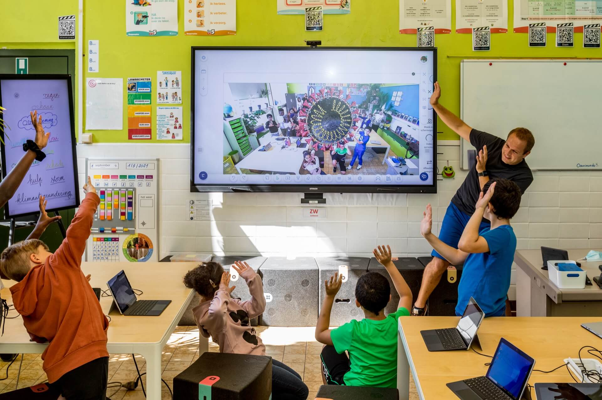

My ICT Journey This school year in ICT has been full of fun experiences and new lessons. I learned so many things that helped me understand how technology works and how creative we can be when using it. During the first quarter, we started by introducing ourselves and learning some basic computer skills. Then, we worked on the Task Payers activity, which helped us explore how to use different Microsoft tools. After that, we made a poster called “Keven the Cookie” using GIMP. It was one of my favorite projects because I got to design and edit my own work creatively. We also edited our own IDs and wrote notes in our notebooks so we could prepare for our exams.
When the second quarter came, things became even more exciting. We created our own Advocacy Campaign, which taught us how to use technology to promote positive messages. Then we made a web page about “Save the Ocean,” where we posted memes and quotes to spread awareness. It was fun seeing how many people liked, followed, and reacted to our page. After that, we shared and presented our results to the class, showing our feedback and engagement. Through all these activities, I realized that ICT is not just about using computers — it’s about communication creativity, and teamwork. I learned how to design, organize, and use technology responsibly. ICT helped me grow in so many ways. I became more confident, more creative, and more aware of how technology can be used to share good messages and make a difference. I’m proud of everything I’ve learned this school year!

This reflection highlights my experiences and learning throughout the semester in Empowerment Technology. The purpose of this reflection is to look back on how technology has helped me grow as a learner and an individual. Throughout this semester, I have explored various digital tools and platforms that not only enhanced my technical skills but also deepened my understanding of how technology shapes communication, creativity, and productivity in our modern world.
One key experience with Empowerment Technology was using a language learning app. It empowered me to enhance my language skills at my own pace, providing personalized lessons and immediate feedback. This experience taught me how digital tools can be powerful aids in self-improvement and independent learning. Another memorable activity was creating a digital poster and advocacy page, which helped me express creativity while learning how to communicate meaningful messages online. Although some tasks were challenging, especially when learning to use new applications, they helped me develop patience and problem-solving skills. Through this journey, I have grown more confident and responsible in using technology. I learned how to manage my time effectively while completing digital tasks, and I gained new skills in editing, designing, and using online platforms for collaboration. My perspective on technology also changed—it’s not just for entertainment but also a valuable tool for education, innovation, and empowerment. This subject encouraged me to become a more mindful and skilled digital citizen, ready to use technology for positive and purposeful goals.